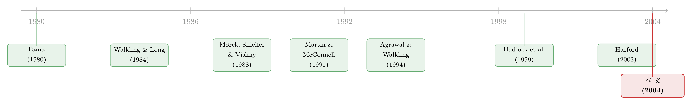

卖掉公司之前，老板先给自己开了张支票
本文读的是 Hartzell, Ofek & Yermack (2004, Review of Financial Studies)：在 1990 年代那波「你好我好」的友好并购里，目标公司 CEO 常常为自己谈下一笔特殊现金（特别奖金、临时加码的金降落伞），平均能值好几百万美元；而这笔钱与「他要不要留在买方继续当官」此消彼长——拿不到买方职位的 CEO，平均多拿约 $5 million 的现金。更扎心的是，凡是给 CEO「格外关照」的交易，目标公司的【股东】拿到的收购溢价反而更低。
1 一个谁都知道、却没人量过的问题
先讲一个新闻里反复上演的桥段。两家公司谈合并，谈着谈着崩了——不是因为价钱没谈拢，而是因为两位 CEO 谁也不肯把「一把手」的位子让给对方。Texaco 和 Chevron 当年就是这么吹的，AHP 和 Monsanto 也是；后者宣布告吹那天，两家市值合计一天蒸发了 $14 billion。一位资深并购律师对《纽约时报》说得更直白：很多收购方「被堵在门口，直到一份（给目标方管理层的）薪酬安排被签字、盖章、送达为止」。
这些故事都指向同一件事：在一桩并购里，CEO 谈判桌上摆着的，从来不只是「该付给股东多少钱」这一件事。谁来当合并后的 CEO、谁进董事会、总部设在哪、公司还叫不叫原来的名字——尤其是，高管自己能拿多少——这些「个人条款」往往是【最先】被搬上桌面的。
那么，一个自然的问题是：在这样一个【友好协商】（而非敌意要约）唱主角的年代，目标公司的 CEO 究竟用「交出控制权」换来了一套什么样的组合？现金、股票期权的兑现、还是买方公司里的一个新职位？这三样东西之间，他又是怎么取舍的？最关键的——他会不会为了把自己的那份谈大，悄悄牺牲掉本该属于股东的溢价？
这篇 2004 年发表在 RFS 上的论文，做的就是把这个「人人都觉得存在、却几乎没人认真量过」的现象，掰开揉碎、算成实打实的美元。
这条线后来在公司金融里越走越深。关于并购里那笔「最后一分钟的奖金」，可参见《奖金，奖的不是「赚到钱」，而是「说了算」》；关于谈判桌底下临时发出的期权，可参见《最后一分钟的两百万股期权》。
2 为什么偏偏盯住 1990 年代、且只看「成交」的交易
要回答上面的问题，样本的选法本身就是识别的一半。
作者从 Securities Data Company（SDC）的并购数据库里，挑出 1995 年 1 月 1 日到 1997 年 12 月 31 日之间宣布的、全部【已完成】的美国并购，并加了几道筛子：买卖双方都公开上市、都在 CRSP 里；公告前四周双方市值都超过 $100 million；买方最终持股达到 90% 以上；双方市值之比落在 0.10 到 10.00 之间（把那些「大鱼吞小虾、目标 CEO 根本没有讨价还价余地」的极端交易排除掉）。这样得到 320 桩候选，再剔掉买方早已控股的 8 桩和一桩不受 SEC 申报要求约束的加拿大交易，最终锁定 311 家目标公司。回归分析里信息齐全的有 239 位 CEO。
为什么是 1990 年代？因为它和 1980 年代是两个世界。Andrade, Mitchell & Stafford (2001) 发现，1990 年代并购的【金额】与 1980 年代相当，卷入的公司比例甚至更高；但敌意收购的频率断崖式下跌——这十年里只有 4% 的并购在某个阶段带有敌意，而 1980 年代和 1970 年代分别是 14% 和 8%。本文样本里，仅有 2.6% 的交易是从不请自来的报价开始的。
这一点至关重要。如果像 Mørck, Shleifer & Vishny (1988) 那样，把敌意收购看作「纪律性」的、把友好收购看作「协同性」的，那么当敌意收购几乎绝迹，CEO 就基本不必再担心「不卖就被赶下台」。于是他手里攥着一张厚厚的【议价牌】：你想要我点头，就得让我满意。
而为什么只看「已完成」的交易？因为先前大量文献研究的是并购的【早期阶段】——管理层如何抵抗、公司作为收购标的有多大吸引力。本文反其道而行，只盯【最终成交的条款】：尘埃落定、白纸黑字签下的那一刻，CEO 到底拿到了什么。这等于把「讨价还价的结果」从「讨价还价的过程」里干净地切了出来。
3 把 CEO 的「战利品」拆成五块
接着，论文做了一件很笨却很扎实的事：翻遍三份 SEC 文件（并购前最后一份委托书/10-K、并购时的 S-4、并购后买方的第一份委托书），把每位目标 CEO 的全部收益拆成五块来计量。
第一块，直接持股的增值。 用收购溢价乘以 CEO 公告前的持股市值算出来。这是最大的一块：中位数略高于 $1.3 million，均值却高达约 $4.2 million（均值远大于中位数，说明少数巨富 CEO 把平均数拉得很高）。
第二块，期权的增值。 受披露所限，作者只能算一个【上界】：假设所有期权都已在价内、并在交易时被「强制行权、一次性兑现」。即便如此，中位数也只有约 $230,000、均值 $656,000，只有直接持股那块的六分之一左右。
注意这两块的性质：CEO 能拿到它们，【只】因为全体股东都收到了买方支付的溢价。换句话说，到这里为止，CEO 和股东的利益是【一致】的。所以，如果说 CEO 和股东之间真有利益冲突，那冲突必然来自下面三块。
第三块，金降落伞（golden parachute）。 样本里 69% 的 CEO 在并购前就签有降落伞协议，典型结构是「薪资加奖金的若干倍」一次性支付（出于税务原因——美国《国内收入法典》第 280G 条——这个倍数常常正好是 3）。含那些拿零的人在内，降落伞的中位数是 $900,000、均值 $1.465 million。
第四块，临时加码的降落伞（augmentation）。 这是论文头一次系统记录的变量。有 12% 的 CEO，在董事会批准合并的【同一时刻】，被董事会投票【临时增加】了降落伞价值——股东事后才从 SEC 文件里得知。这一块均值约 $394,000，但若除以 0.121 的发生频率，意味着一旦董事会真出手加码，平均增值高达约 $3.25 million。而且作者发现，被加码的这群 CEO 恰恰是预期收益偏小的——原本降落伞更少（有协议者均值 $1.15M vs. 全样本 $2.26M）、持股也更少（2.35% vs. 3.05%）。仿佛是临门一脚，给「亏得最多」的人补一刀。
第五块，特别现金奖金（special bonus）。 这是另一个新变量，也是全文的题眼。在 272 桩里有 74 桩（约 27%）出现了与降落伞无关的额外现金支付，均值约 $1.2 million，折算成「发生时」的平均值是 $4.42 million。这些钱披着各种名目：28 桩号称「咨询协议」、26 桩是「竞业禁止」、11 桩用于「注销雇佣合同」，还有「留任奖金」「过渡奖金」「签约奖金」乃至「建设性控制权变更奖金」——名字五花八门，本质都是一笔在成交那一刻塞进 CEO 口袋的现金。
4 真正关键的一步：现金和「位子」，是可以互换的
到这里，故事还只是一份清单。但真正关键的一步，是把这五块收益和 CEO 的【后续去向】放在一起做回归——于是反转出现了。
论文最有意思的结论，建立在两个此前无人研究的变量上：降落伞的临时加码、和特别现金奖金。回归显示，这两笔「谈判出来的现金」，与 CEO 是否继续留任买方高管之间，存在【强烈的反向关系】：点估计表明，当 CEO 【不】成为买方高管时，他能多拿到约 $5 million 的额外现金。
这句话可以反过来读，而且反过来读更惊人：某些 CEO 是在用【放弃现金】来「购买」买方公司里的一个高管职位。收购方则是在【明码标价】地花钱，买 CEO 交出对自家资产的管理控制权。现金和位子，是一组可以互相折算的筹码。
与此呼应的另一个结论是：这些谈判现金，与 CEO 此前的【超额薪酬】（用一个基础薪酬回归模型的残差来衡量）呈强烈的【正相关】。也就是说，过去拿得越「超」的 CEO，临走时谈下的现金也越多。把这两件事拼在一起，作者给出了全文的理论锚点——这些最后一刻的现金，是一种「事后结清」（ex post settling up），这个概念来自 Fama (1980)：在一个不存在敌意约束的世界里，市场用一笔临别现金，把 CEO 卖掉公司时失去的那些好处（未来的工资、在位时榨取私利的能力）一次性「补」给他、让他「不亏」，这样他才肯松手。
别把这笔「补偿」想得太温情。它的另一面是：如果这是对 CEO「私人控制权收益」的赎买，那这笔钱本质上是从【并购总盈余】里切走的一块——切走的越多，留给目标股东的就越少。
于是论文走到了最后、也是最有杀伤力的一步。作者发现，凡是涉及对 CEO「非同寻常的个人关照」的交易——比如发了特别现金奖金、给了买方的高管职位、安排了买方董事会席位——目标公司股东拿到的收购【溢价更低】。这正是代理冲突最直接的证据：CEO 把本该属于股东的谈判筹码，换成了自己口袋里的东西。
把所有五块加总，目标 CEO 的总收益中位数约 $4–$5 million、均值 $8–$11 million（取决于用 20 日 CRSP 溢价还是 4 周 SDC 溢价）。换算成「相当于并购前年现金薪酬的多少倍」，中位数是 6 到 9 倍，均值高达 10 到 16 倍。考虑到下面要讲的离职率，这笔钱看起来更像是「CEO 若一直干到退休、本可领到的薪酬的现值」的一个粗略替代品。
5 拿了钱的人，后来都去哪了
那么，那些「用现金换了位子」的 CEO，留下来之后过得怎么样？而那些「拿钱走人」的，又真的全身而退了吗？
数据给的答案相当冷峻。约 50.3% 的目标 CEO 起初会以某种身份留在合并后的公司（含非执行董事长、副董事长），57% 进入买方董事会。但「留下」远不等于「留得住」：那些选择留任的 CEO，其后续的年离职率大约是文献中正常（非并购相关）水平的【三倍】。而绝大多数离开的 CEO，此后并没有再找到新的高管工作。
这恰好把整个故事闭环了。Shleifer & Vishny (2003) 论证过，那些更看重短期的目标管理层，更可能在股票并购里把公司卖掉、也更可能在并购后不久就走人。本文的证据与之一致：相当一部分 CEO 心里清楚自己留不长久，于是宁可【现在多拿现金】，也不赌那个大概率兑现不了的「长期留任」。现金和位子之间的取舍，说到底是一场关于「我还能在这张牌桌上坐多久」的清醒计算。
这种「短期化」的取向，和并购市场的整体图景是吻合的。关于并购规模与收益的一个反直觉事实——大公司主导的并购如何把平均收益拖成负值——可参见《赚了 1.1%，却亏掉 3030 亿》。
6 文献脉络
把这篇论文放回它所在的那条研究线，会看得更清楚。
最上游的思想源头是 Fama (1980) 的「事后结清」：经理人市场会通过事后的奖惩，把代理人过去的表现「找平」。本文最核心的解释——临别现金是对 CEO 的 ex post settling up——正是这一思想在并购场景里的一次落地。
接着，1980 年代的并购文献把焦点放在【敌意收购】和管理层抵抗上。Walkling & Long (1984) 研究了管理层财富如何影响他们对要约的抵抗；Mørck, Shleifer & Vishny (1988) 区分了敌意收购的「纪律性」与友好收购的「协同性」。这条线关心的是「CEO 如何为了保住私利而阻挠交易」。
然后，一批文献开始量化目标 CEO 在并购前后的【职业沉浮】。Martin & McConnell (1991) 测出成功要约后一年目标高管 41.9% 的离职率；Agrawal & Walkling (1994) 发现收到要约的公司里只有 45% 的 CEO 在一年后还在位；Hadlock, Houston & Ryngaert (1999) 则在银行并购里看到两年内 53.6% 的高管离开。本文关于「离职率约为常态三倍」的发现，正是接在这条线后面。

但真正与本文【并肩】的，是同期 Harford (2003) 对目标公司董事激励（留任、经验、结清）的研究——两篇论文从不同角度，共同把「并购里谁在为谁的私利买单」这个问题，从轶事变成了可计量的实证。本文的独特位置在于：它第一次系统地把「特别现金奖金」和「降落伞临时加码」这两个隐蔽变量挖出来，并用它们揭示了现金—职位—股东溢价之间那条此消彼长的暗线。
7 评论与延伸（Q&A + 研究方向）
(a) 几个可能的疑问
Q：这和普通的金降落伞研究有什么不同？
关键在两个【新变量】。降落伞本身是【事前】签好的、写在合同里的；本文真正的发现是【事后、临门一脚】才出现的两样东西——董事会在批准并购当天临时加码的降落伞、以及五花八门名目下的特别现金奖金。正是这两笔「谈判出来的」钱，才与 CEO 的去向和股东溢价挂上了钩。
Q：那个「不留任就多拿 $5 million」的反向关系，会不会只是反向因果？
这是本文识别上最该警惕的地方。论文用「只看已完成交易」把过程和结果切开，又用 CEO 的【超额薪酬残差】等前定变量来支撑「事后结清」的解释。但严格说，现金与留任之间是【联合决定】的——是「拿了钱所以走」，还是「反正要走才换成钱」，横截面回归难以彻底分清。作者的措辞也很谨慎，用的是「关联」而非「因果」。
Q：用「假设所有期权都在价内」来算期权收益，会不会高估？
会，作者自己也承认这是一个【上界】。但他们抽查了 50 位 CEO 的子样本，50 家里只有 3 家的期权完全在价外，其余 47 家的平均「价内程度」（价内价值/行权成本）达到 2.63、delta 接近 1。所以即便高估，幅度也有限；而且期权那块本就只占总收益的一小部分。
Q：「股东溢价更低」这个结论，方向会不会反了——是不是本来就便宜的公司才更需要给 CEO 发奖金？
这正是该结论最脆弱之处。被临时加码降落伞的那群 CEO，恰恰是预期收益更小、持股更少的人。所以「关照 CEO」与「低溢价」可能同源于「这本来就是一桩对目标方不算划算的交易」。论文给的是一种【相关性证据】，把它读成「CEO 主动牺牲了股东」需要保留一份谨慎。
Q：样本只有 311 桩、且集中在 1995–1997，结论能外推吗？
外部效度确实受限。这套机制依赖于一个【敌意收购近乎消失】的特定环境——CEO 有足够议价权才谈得动这些条款。换到敌意收购更常见的年代、或公司治理与披露规则不同的国别市场，现金—职位的取舍结构未必照搬。
Q：这对「私人控制权收益」的文献有什么含义？
提供了一个少见的、【明码标价】的窗口。以往估计私人控制权收益，要么靠控股权大宗交易的价格（Barclay & Holderness, 1989），要么靠不同投票权股票的价差（Lease, McConnell & Mikkelson, 1983）。本文则直接观察到 CEO 为「交出控制权」收下的那笔现金，等于给「控制权对在任 CEO 值多少」量了一把更直接的尺。
(b) 几个可能的研究问题与提案
1. 把这套「现金—职位取舍」搬到债权人视角。
【经济故事】并购里 CEO 拿走的临别现金，是从并购总盈余里切走的；这块现金最终会不会以更高杠杆、更弱契约的形式，转嫁到目标公司【债权人】头上？如果 CEO 的私利赎买侵蚀了交易质量，公司债持有人理应在并购公告时要求补偿。 【可行性】中。需要把 SEC 文件里的特别奖金/降落伞数据，匹配到目标公司的存量公司债（TRACE 价差、评级迁移）。识别上可借「是否发放特别奖金」做横截面比较，但内生性同前文一致，需谨慎处理。
2. 外资买方会不会「关照」得更少？
【经济故事】跨境并购里，买方与目标 CEO 之间的社会网络更弱、信息更不对称，买方或许更不愿（也更难）给目标 CEO 发那种说不清名目的特别奖金；反过来，目标 CEO 的议价权可能也因「难以留任外资买方」而下降。这能把「现金—职位取舍」放进一个跨国的制度变量里检验。 【可行性】中。SDC 跨境并购样本充足，但「特别奖金」这类细颗粒数据需逐桩手工从申报文件里挖，国别覆盖是瓶颈。
3. 用披露规则的变化做一次准自然实验。
【经济故事】这些临时加码和特别奖金之所以能「股东事后才知道」，靠的正是披露的【滞后】。如果某次监管改革要求并购前就披露给管理层的补偿安排，那么「临门一脚加码」的频率与金额是否会下降？这能把「信息不透明 → 私利赎买」这条机制因果化。 【可行性】中高。需要找到一个干净的披露规则断点（事件研究/DiD），关键在于规则变化是否外生于并购质量本身。
4. 「特别奖金」是不是并购溢价被压低的【中介变量】？
【经济故事】本文已分别显示「关照 CEO」与「低溢价」相关。下一步可以做中介分析：在控制交易特征后，特别奖金/职位安排能解释多大比例的溢价折让？这能把「CEO 私利侵蚀股东」从相关推进到机制分解。 【可行性】高。所需变量本文已基本具备，难点在于中介分析对遗漏变量极其敏感，需要更强的工具或设计支撑。
8 参考文献与我的判断
我的判断是：这篇论文最大的贡献，不在某个惊人的系数，而在它【看见了别人没看见的变量】——把「降落伞临时加码」和「特别现金奖金」这两笔藏在 SEC 文件褶皱里的钱挖出来，并用「现金 ↔ 职位」这一条简洁的取舍线，把代理冲突量成了可读的美元。Fama (1980) 的「事后结清」第一次在并购里有了如此具体的影子。
对识别，我保留两点担忧。其一，现金与留任之间是联合决定的，横截面回归很难分清因果方向；「不留任多拿 $5M」既可以读成「拿了钱才走」，也可以读成「要走才换成钱」。其二，「关照 CEO → 低溢价」这一最具杀伤力的结论，可能与「这本就是对目标方不划算的交易」同源——被加码的恰是预期收益最小的那群 CEO，这一事实让因果解读必须留有余地。
后续我最想看到的，是把披露规则的外生变化用作实验，去验证「信息滞后」是否真的是这些私利赎买得以发生的土壤；以及把视角从股东延伸到债权人，看看 CEO 临别那张支票，最终是不是也有一部分账，记在了公司债持有人头上。
参考文献
Agrawal, A., and R. A. Walkling (1994). Executive Careers and Compensation Surrounding Takeover Bids. Journal of Finance 49, 985–1014.
Almazan, A., and J. Suarez (2003). Entrenchment and Severance Pay in Optimal Governance Structures. Journal of Finance 58, 519–547.
Andrade, G., M. Mitchell, and E. Stafford (2001). New Evidence and Perspectives on Mergers. Journal of Economic Perspectives 15, 103–120.
Barclay, M., and C. Holderness (1989). Private Benefits of Control of Public Corporations. Journal of Financial Economics 25, 371–395.
Fama, E. (1980). Agency Problems and the Theory of the Firm. Journal of Political Economy 88, 288–307.
Hadlock, C., J. Houston, and M. Ryngaert (1999). The Role of Managerial Incentives in Bank Acquisitions. Journal of Banking and Finance 23, 221–249.
Harford, J. (2003). Takeover Bids and Target Directors' Incentives: Retention, Experience, and Settling Up. Journal of Financial Economics 69, 51–83.
Hartzell, J. C., E. Ofek, and D. Yermack (2004). What's In It for Me? CEOs Whose Firms Are Acquired. Review of Financial Studies 17(1), 37–61.
Lease, R. C., J. J. McConnell, and W. H. Mikkelson (1983). The Market Value of Control in Publicly-Traded Corporations. Journal of Financial Economics 11, 439–471.
Martin, K. J., and J. J. McConnell (1991). Corporate Performance, Corporate Takeovers, and Management Turnover. Journal of Finance 46, 671–687.
Mørck, R., A. Shleifer, and R. W. Vishny (1988). Characteristics of Targets of Hostile and Friendly Takeovers. In A. J. Auerbach (ed.), Corporate Takeovers: Causes and Consequences, University of Chicago Press.
Shleifer, A., and R. W. Vishny (2003). Stock Market Driven Acquisitions. Journal of Financial Economics 70.
Walkling, R. A., and M. S. Long (1984). Agency Theory, Managerial Welfare and Takeover Bid Resistance. RAND Journal of Economics 15, 54–68.